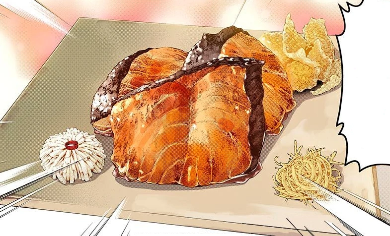

Japanese Salmon

Ingredients
- 2 Salmon Filet (5 oz each)
- 1 tbsp soy sauce
- 3 tbsp mirin
- 1 tbsp salt
- 1/2 tbsp oil
Steps
- Combine all ingredients except the oil in a ziplock bag, remove as much air as possible and marinade overnight (or minimum 3 hours).
- Heat 1/2 tbsp oil in a non stick pan over medium heat.
- Add salmon skin side down, cook for 2 to 3 minutes until crispy. Check the skin to ensure it isn't cooking too quickly - if it is, then turn down the heat and/or remove the pan from the stove briefly to allow the temperature to decrease.
- Drizzle over remaining marinade in the ziplock bag over the flesh side. Flip and cook the flesh side for 2 minutes, or to your liking. I like salmon medium rare so the inside is very moist and just cooked.
- Rest for a couple of minutes, remembering that the salmon will continue to cook while resting, then serve.